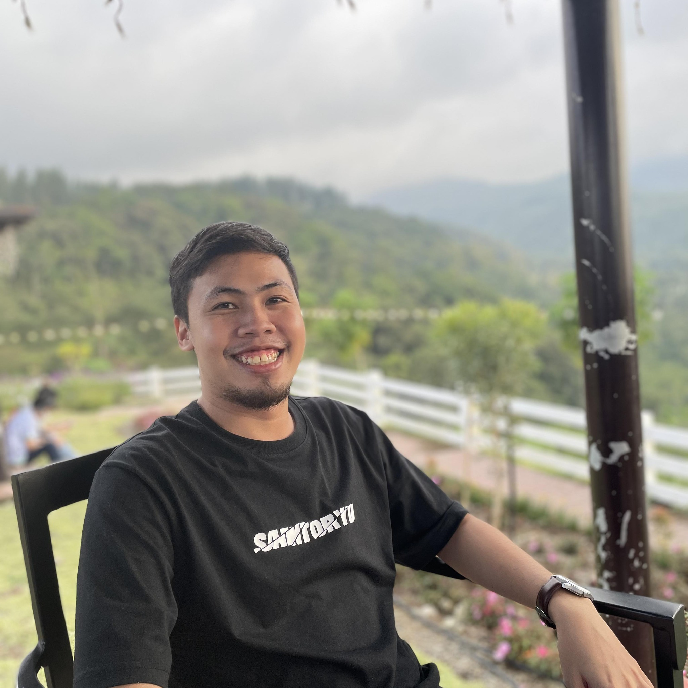

Jasonn D. Villaver

Who is Jasonn?
A web developer / graphic designer with a keen eye for design and functionality.
Education
- Bachelor of Science in Information Technology - Saint Peter's College of Iligan City (2023 - present)
Works and Experiences
- Junior Graphic Artist, Se7en Studio
June 2022 - July 2023
- Made logos, posters, social media posts, designs, and other related artwork as requested by clients
- Made drafts, mock-ups, and presentations
- Assisted head designer in incorporating designs and other graphic arts
- Collaborated with ther team's illustrator in creating artworks for clients
- Sports Team Graphics Artist, Halfbloods Ultimate
2016 - present
- Created and designed team logo
- Designed the team's jersey and banners
- Created social media posters for team-related events
- Created team promotional artworks such as social media posts and other related materials
What can I offer?
- Technical Skills:
- Canva
- Photshop
- HTML and CSS
- Surface-level video editing
- Basic computer troubleshooting
- Proficient in MS Word, Powerpoint, Excel
- Google Drive, Sheets, Docs
- Intangible qualities:
- Methodical
- Keen desire for learning
- Good communication skill
- Resourceful and innovative
- Team-player
- Critical thinking
- Emotional intelligence
Awards and Certifcations
- Certificate of Completion in Skillshare: Course about Design Theory
Other